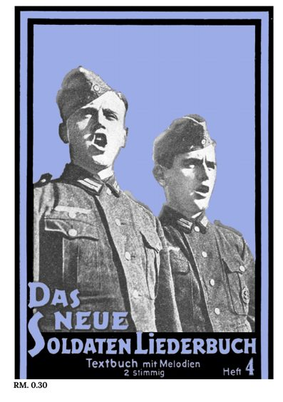

Heft 4.
Das neue Soldaten-Liederbuch
Ons liedboekje met de bekendste soldatenliederen: Im Wald im grünen Walde, Infanterielied, Ein Heller und ein Batzen, Wir kommen wieder, Die blonde Rie, Erika, Westerwaldlied en Wir sind des Geyers schwarzer Haufen. Achterin ruimte voor eigen aantekeningen.
- Formaat
- A5-boekje, 20 bladzijden
- Papier
- 5 vellen A4, dubbelzijdig